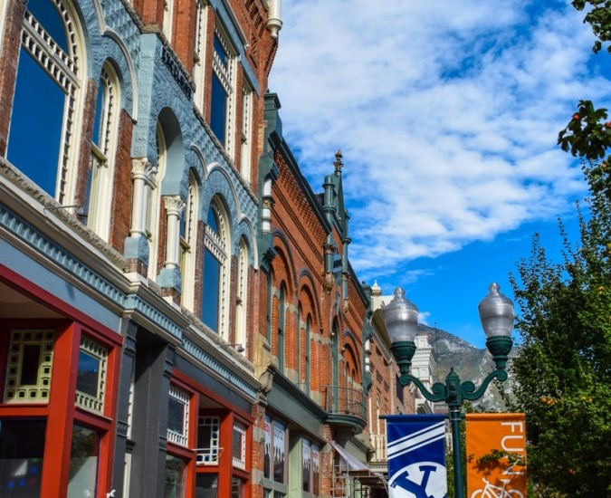
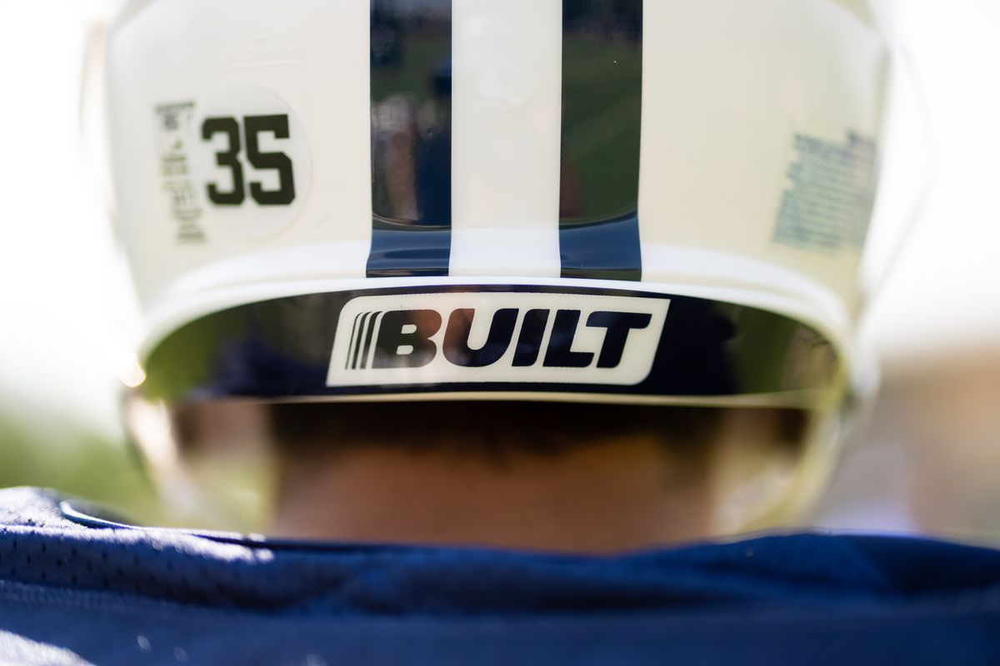
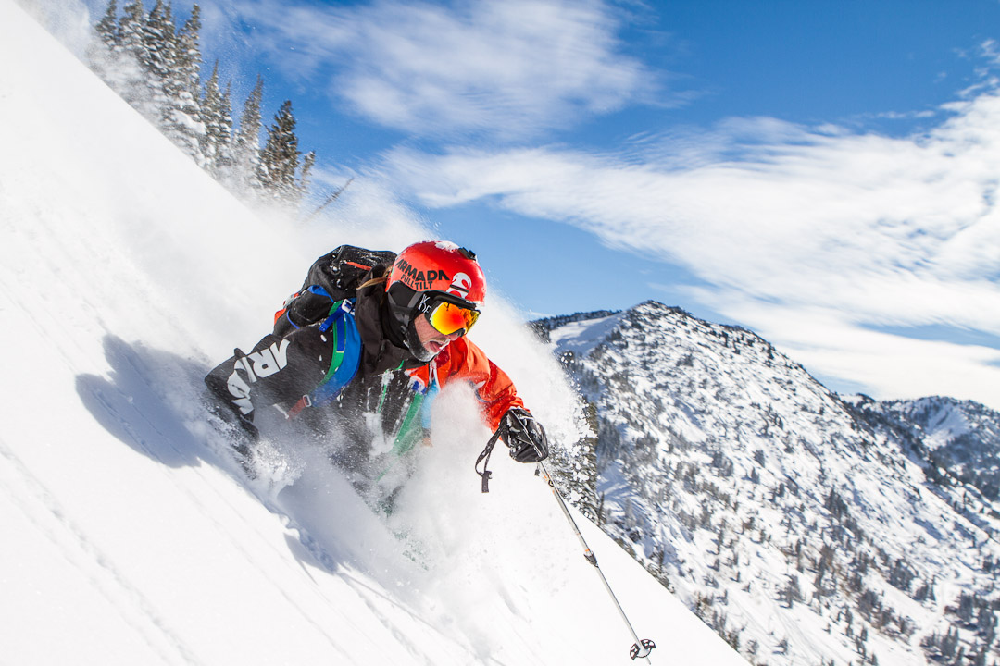

Provo City Demographics
 Provo is a city located in Utah County, Utah. Before its founding it was the home of the Ute tribe until the town was settled in 1849 by members of the Church of Jesus Christ of Latter Day Saints. Provo reflects this history in the way that it is today. There are two Latter Day Saint temples, provo is home to Brigham Young University which is owned by the church, and members of the church comprise 82% of the population. The city is also known however for for being a great place for business as it has been steadily growing since the 1950's. Over the last ten years the population has grown by 3.65% and has the 4th highest population in the state of Utah at 678,458 in 20121. The average household income was $69,265 which is above the national average even though it is a college town where the Median age is 23.6 years old. A stout 56% of the population over 25 years old with earnings has a bachelors degree or higher.
Built4Life
 Brigham Young University is one of the most prominent members of the community. They have a worldwide following and are cutting edge with the NCAA's new Name Likeness and Image rules. This means that student athletes are becoming a very large part of the communities advertising. Working with BYU's Built4Life program provides advertising for businesses nationwide as well as strongly being represented in the community. Built, a company out of Orem, Utah has already shown the effectiveness with the new national exposure their company is getting.
Skateboarding Competition
 Each year the Provo City Rec Center holds a skate park competition. This years competition will be held on Saturday, December 18th after it was rescheduled earlier this year due to rain. The competition will go from 3:00-8:00PM and will be held at the Provo Rec Center Skate Plaza 320 W 500 N. Pre-Registration is available online but same day registrations are also accepted. Divisions are split by age and sex. All abilities welcome! Check our social media for more information on how you and your business can be involved in our community.